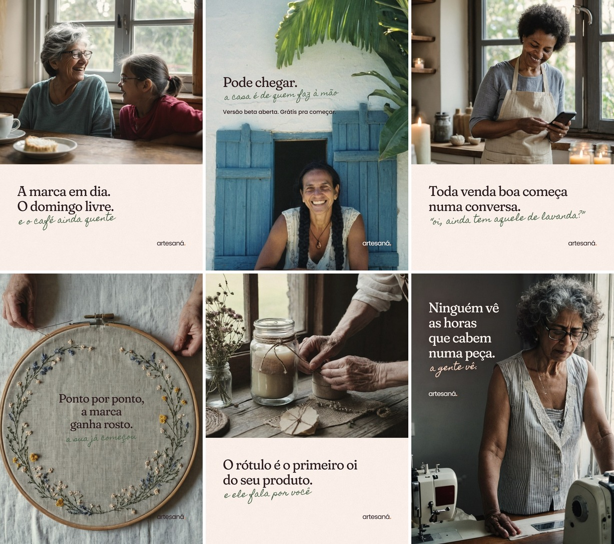

Imagem realista de quem faz à mão, frase curta e um recado escrito à mão. Publique na ordem, da 1 à 6. No perfil, a 6 fica em cima à esquerda e a 1 embaixo à direita, como na prévia.

Prévia da grade do perfil
1. As horas que cabem numa peça
Imagem gerada por IA. Ao publicar, ative o rótulo de IA do Instagram.
Tem a hora de fazer, a de esperar secar, a de embalar. E tem as que ninguém conta: responder cliente, tirar foto, pensar no preço, escrever o rótulo.
Quem compra vê a peça pronta. Quem faz sabe quanto tempo mora ali dentro.
O artesaná. nasceu olhando pra essas horas que não aparecem. É um app pra quem produz, vende e divulga sozinha. Ele cuida do que toma tempo e ninguém ensina: o rótulo, a lista de ingredientes, o link do WhatsApp e a cara da marca.
Está em versão beta e é grátis pra começar. O link está na bio.
Conta pra gente: qual é a sua peça mais demorada?
#artesanato #feitoamao #artesanatobrasileiro #costura #saboariaartesanal #velasartesanais #empreendedorismofeminino #pequenosnegocios
Texto alternativo das imagens
Costureira de cabelos grisalhos cacheados e óculos, de pé entre duas máquinas de costura, alisa um tecido com a mão. Texto: Ninguém vê as horas que cabem numa peça. A gente vê.
2. O rótulo é o primeiro oi
Imagem gerada por IA. Ao publicar, ative o rótulo de IA do Instagram.
Antes do cheiro, antes do gosto, antes de abrir o pote, vem o rótulo. É ele que dá o primeiro oi pra quem compra.
No artesaná. você monta o seu pelo celular, redondo, retangular ou tag de presente. Ele sai em PDF, com a folha A4 já montada pra imprimir em casa ou levar na gráfica.
Pra quem faz cosmético, tem a lista de ingredientes no padrão INCI e uma aba com os campos que a norma da Anvisa pede no rótulo, como lote, validade e composição em português. O app organiza o rótulo. A regularização do produto continua sendo um passo seu.
Grátis na versão beta. O link está na bio.
#rotulos #embalagem #feitoamao #artesanato #saboariaartesanal #cosmeticosnaturais #alimentosartesanais #pequenosnegocios
Texto alternativo das imagens
Mãos de uma senhora amarram barbante num potinho, ao lado de um pote de vela com faixa de papel kraft e de um ramo de flores secas, numa mesa de madeira perto da janela. Texto: O rótulo é o primeiro oi do seu produto. E ele fala por você.
3. Ponto por ponto, a marca ganha rosto
Imagem gerada por IA. Ao publicar, ative o rótulo de IA do Instagram.
Nenhuma marca nasce pronta. Ela vai ganhando rosto aos poucos: um nome, uma cor, um jeito de falar, uma história que só você tem pra contar.
No artesaná. tem um checklist da identidade da marca. Ele mostra o que você já tem e o que ainda falta, e você segue na sua ordem. No perfil, você escreve a sua história, diz pra quem faz e escolhe o jeito da marca: delicada, rústica, sofisticada ou alegre.
Se a sua começou na mesa da cozinha, começou no lugar certo.
Grátis na versão beta. O link está na bio.
#identidadevisual #marcaautoral #feitoamao #artesanato #trico #croche #empreendedorismofeminino #pequenosnegocios
Texto alternativo das imagens
Bastidor grande de bordado visto de cima, com uma guirlanda de flores miúdas bordada no linho e duas mãos passando a linha na agulha. Dentro da guirlanda, o texto: Ponto por ponto, a marca ganha rosto. A sua já começou.
4. Toda venda boa começa numa conversa
Imagem gerada por IA. Ao publicar, ative o rótulo de IA do Instagram.
“Oi, ainda tem aquele de lavanda?”
Quem vende feito à mão sabe que a venda começa assim, numa conversa.
O artesaná. cria o link do seu WhatsApp, curto, pra colocar na bio. Se quiser, já com uma mensagem pronta, e a cliente chega dizendo de onde veio. Tem também o QR code pra colar na embalagem. Quem gostou do produto acha você de novo.
Grátis na versão beta. O link está na bio.
Qual foi a mensagem de cliente que fez o seu dia?
#whatsappbusiness #vendasonline #feitoamao #artesanato #saboariaartesanal #velasartesanais #empreendedorismofeminino #pequenosnegocios
Texto alternativo das imagens
Mulher negra de cabelo crespo curto e avental de linho sorri olhando o celular, perto da janela, com velas artesanais acesas ao redor. Texto: Toda venda boa começa numa conversa. Oi, ainda tem aquele de lavanda?
5. Pode chegar
Imagem gerada por IA. Ao publicar, ative o rótulo de IA do Instagram.
Pode chegar. A casa é de quem faz à mão.
A versão beta do artesaná. está aberta, e começar é grátis.
Como entrar:
1. Toque no link da bio.
2. Abra o app e diga o nome da sua marca.
3. Crie o primeiro rótulo do produto que você mais vende.
Não precisa baixar em loja. Ele abre no navegador, instala na tela inicial do celular e funciona sem internet. Seus dados ficam só no seu aparelho.
Como é beta, a sua opinião ajuda a decidir o que vem depois. Conta aqui nos comentários o que ajudou e o que faltou.
Conhece alguém que faz sabonete, vela, cosmético natural, comida ou artesanato? Marca ela aqui.
#artesanato #feitoamao #artesanatobrasileiro #saboariaartesanal #velasartesanais #cosmeticosnaturais #empreendedorismofeminino #pequenosnegocios
Texto alternativo das imagens
Mulher de tranças longas sorri debruçada numa janela de madeira azul, numa casa de parede caiada, com folhas de palmeira no alto. Texto: Pode chegar. A casa é de quem faz à mão. Versão beta aberta. Grátis pra começar.
6. A marca em dia, o domingo livre
Imagem gerada por IA. Ao publicar, ative o rótulo de IA do Instagram.
Domingo é dia de mesa cheia, de café sem pressa, de conversa que não acaba. Não é dia de brigar com rótulo nem de montar link.
O artesaná. resolve essa parte durante a semana, pelo celular e em poucos minutos. O que você preenche fica guardado no aparelho, e da próxima vez é só abrir e ajustar.
Sobra tempo pra quem senta do seu lado.
Grátis na versão beta. O link está na bio.
#feitoamao #artesanato #familia #rotinadeempreendedora #saboariaartesanal #velasartesanais #empreendedorismofeminino #pequenosnegocios
Texto alternativo das imagens
Avó de cabelos grisalhos e óculos ri com a neta à mesa da cozinha, com café e uma fatia de bolo, diante da janela. Texto: A marca em dia. O domingo livre. E o café ainda quente.
Bio do perfil
Em Editar perfil, cole cada texto no campo de mesmo nome. A bio aceita até 150 caracteres.
Nome
artesaná. | app pra quem faz à mão
Categoria
Aplicativo
Link
artesana-mktdigital.com.br
Bio, opção 1: recomendada (137 caracteres)
Pra quem produz, vende e divulga sozinha 🧵
Rótulo, link do WhatsApp e a cara da sua marca, no celular
Beta aberto, grátis pra começar 👇
Bio, opção 2: mais afetiva (126 caracteres)
Feito à mão tem história. A gente ajuda a contar 🌿
Rótulo, WhatsApp e identidade da marca no celular
Grátis na versão beta 👇
Bio, opção 3: mais direta (128 caracteres)
App pra saboaria, velas, cosméticos naturais e artesanato
Rótulo em PDF • link do WhatsApp • identidade
Grátis na versão beta 👇
Peças anteriores
Saíram da linha do perfil. Ficam guardadas aqui, caso você queira consultar.
Você faz o produto, tira a foto, responde cliente no WhatsApp e ainda pensa no post de amanhã.
A gente sabe como é, porque o artesaná. nasceu olhando pra essa rotina. É um app feito pra quem vive de artesanato e cuida de tudo sozinha: produzir, vender e divulgar.
Ele ajuda naquilo que toma tempo e ninguém ensina: o rótulo do produto, a lista de ingredientes, o link do WhatsApp e a cara da marca.
Já está no ar, em versão beta, e é grátis pra começar. O link está na bio.
Conta pra gente: qual dessas três partes mais pesa no seu dia?
#artesanato #feitoamao #artesanatobrasileiro #saboariaartesanal #velasartesanais #cosmeticosnaturais #empreendedorismofeminino #pequenosnegocios
Texto alternativo das imagens
Ceramista de óculos e avental segura uma caneca feita à mão diante de uma parede de azulejos. Texto: Você produz, vende e divulga sozinha? Esse app é pra você.
Dois sabonetes artesanais empilhados sobre linho, com ramos de flores secas. Texto: Você produz, vende e divulga sozinha? Esse app é pra você.
Seu ateliê cabe no celular.
O que já dá pra fazer hoje no artesaná.:
Rótulo em PDF, redondo, retangular ou tag de presente, com a folha A4 montada pra imprimir em casa ou mandar pra gráfica.
Lista de ingredientes no padrão INCI. Você escolhe em português e copia pronta.
Link do WhatsApp com mensagem automática e QR code pra colocar na bio e na embalagem.
Checklist da identidade da marca, pra ver o que você já tem e o que ainda falta.
Abre no navegador e instala na tela inicial, no Android e no iPhone. O link está na bio.
#artesanato #rotulos #saboariaartesanal #cosmeticosnaturais #velasartesanais #identidadevisual #feitoamao #pequenosnegocios
Texto alternativo das imagens
Mão segura um celular com a tela inicial do app artesaná., com uma lareira desfocada ao fundo. Texto: Todo o marketing da sua marca na palma da sua mão.
Mulher ruiva de óculos, sentada no sofá, usa o celular. Texto: Todo o marketing da sua marca na palma da sua mão.
Menos tempo resolvendo rótulo e link, mais tempo com quem você ama.
A versão beta do artesaná. está aberta, e começar é grátis.
Como entrar:
1. Toque no link da bio.
2. Abra o app e diga o nome da sua marca.
3. Crie o primeiro rótulo do produto que você mais vende.
Leva poucos minutos e seus dados ficam só no seu aparelho.
Conhece alguém que faz sabonete, vela, cosmético natural ou artesanato? Marca aqui nos comentários.
#artesanato #feitoamao #saboariaartesanal #velasartesanais #cosmeticosnaturais #empreendedorismofeminino #artesanatobrasileiro #pequenosnegocios
Texto alternativo das imagens
Mãe e filha pintam ovos numa mesa de madeira, diante de uma parede rosada. Texto: Mais tempo com a família. E a sua marca em dia, sem esforço.
Mulher de cabelos grisalhos e uma menina decoram um bolo juntas na cozinha. Texto: Mais tempo com a família. E a sua marca em dia, sem esforço.
a4. Carrossel: o que tem no app
Publicar as cinco imagens juntas, como carrossel, nessa ordem.
O artesaná. por dentro, em cinco telas.
Rótulo e etiqueta em PDF, no formato redondo, retangular ou tag de presente, com a folha A4 já montada. Tem também o rótulo completo, com os dados que a Anvisa exige.
Link do WhatsApp curto, com mensagem pronta e QR code pra embalagem.
Lista de ingredientes no padrão INCI, com a composição em português.
Checklist da identidade da marca e guias de foto com celular, página no Facebook e datas que mais vendem.
Instala na tela inicial do celular e funciona sem internet.
Está em versão beta e é grátis pra começar. O link está na bio.
#artesanato #feitoamao #saboariaartesanal #velasartesanais #cosmeticosnaturais #rotulos #empreendedorismofeminino #pequenosnegocios
Texto alternativo das imagens
Mulher de cabelos grisalhos sorri olhando o celular, sentada num sofá verde. Texto: Conheça o app por dentro. Tudo pra sua marca, no celular.
Pote azul com etiqueta em branco sobre uma superfície clara. Texto: Rótulo e etiqueta. Em PDF, com os dados que a Anvisa exige.
Mãos seguram um celular com a tela do link do WhatsApp no app artesaná., com QR code. Texto: Link do WhatsApp. Curto, com mensagem pronta e QR code.
Dois sabonetes artesanais empilhados sobre linho, com ramos de flores secas. Texto: Identidade e guias. A cara da marca e como divulgar.
Mulher de cabelos brancos e camisa branca sorri segurando um conta-gotas e um frasco. Texto: Instala no celular e funciona sem internet. Comece grátis. Link na bio.
Rótulo de cosmético não é só nome bonito e lista de ingredientes.
A norma da Anvisa que vale hoje, a RDC nº 907 de 2024, diz o que precisa aparecer: nome e marca, conteúdo, lote, validade, ingredientes no padrão INCI, dados de quem fabrica com CNPJ, número da autorização da empresa e do processo do produto, canal de atendimento e país de origem. A composição também precisa estar em português.
No artesaná. você preenche esses campos uma vez. O app mostra o que ainda falta e monta a etiqueta em PDF, já na folha A4.
Um aviso honesto: o app organiza o rótulo. A regularização do produto e da empresa na Anvisa continua sendo um passo seu.
E a lei do cosmético artesanal? Ela existe desde 2025, mas até agosto de 2026 a Anvisa ainda não tinha publicado as regras pra esse caso.
Grátis na versão beta. O link está na bio.
#saboariaartesanal #cosmeticosnaturais #cosmeticosartesanais #rotulagem #anvisa #artesanato #feitoamao #pequenosnegocios
Texto alternativo das imagens
Frasco conta-gotas com etiqueta em branco e pote com tampa de madeira sobre fundo marrom. Texto: Rótulo de cosmético. Com os campos que a Anvisa exige. Lote, validade, composição em português e dados de quem fabrica.
a6. Anúncio patrocinado
Use a imagem 4:5 no feed e a 9:16 em Stories e Reels. No Gerenciador de Anúncios, envie as duas no mesmo anúncio.
Você produz, vende e divulga sozinha? O artesaná. monta o rótulo do seu produto, cria o link curto do WhatsApp e organiza a identidade dela, tudo pelo celular. Está em versão beta e é grátis pra começar.
Título
Rótulo, link e marca no celular
Descrição
Grátis na versão beta
Botão
Saiba mais
Link de destino
https://artesana-mktdigital.com.br/
Texto alternativo das imagens
Artesã de cabelos grisalhos e jardineira bege sorri segurando o celular perto de uma janela. Texto: Rótulo, link e marca prontos no celular. Comece grátis hoje.
Artesã de cabelos grisalhos e jardineira bege sorri segurando o celular perto de uma janela. Texto: Rótulo, link e marca prontos no celular. Comece grátis hoje.
As imagens da série ateliê foram geradas por inteligência artificial. As pessoas que aparecem nelas não existem. As peças anteriores usam fotos do banco Pexels, com licença livre para uso comercial.